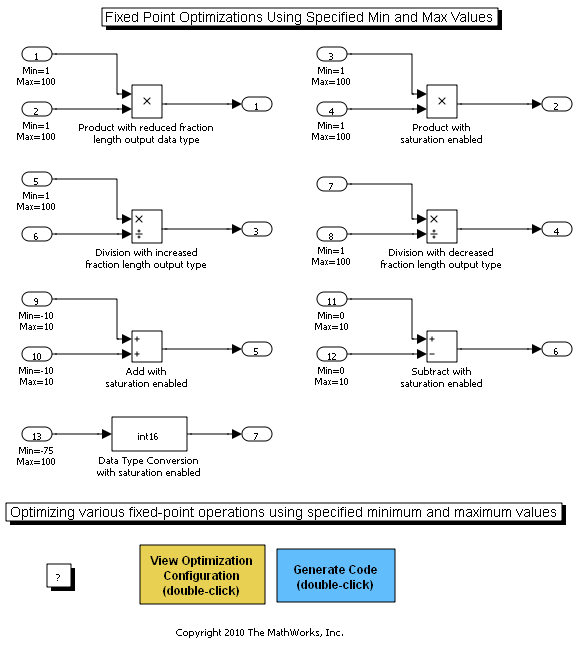

Fixed-Point Optimizations Using Specified Minimum and Maximum Values
This demo shows how to optimize fixed-point operations in generated code using minimum and maximum values that you specify in a model.
Contents
Overview
Minimum and maximum values can represent environmental limits or mechanical limits, such as the output ranges of sensors. The Real-Time Workshop Embedded Coder software can use these values to generate more efficient code by eliminating unreachable code branches and unnecessary utility functions.
Note: You must ensure that the specified minimum and maximum values are accurate and trustworthy. Otherwise, optimization might result in numerical mismatch with simulation.
The benefits of optimizing the generated code are:
- Reducing the ROM and RAM consumption.
- Improving the execution speed.
Open Model
Open the model fxpdemo_min_max_optimization.
open_system('fxpdemo_min_max_optimization');
 Inspect Model
In this model, there are minimum and maximum values specified at the input ports upstream of the various fixed-point blocks. By utilizing these values, every fixed-point operation in the model is optimized in some way.
Generate Code without Optimization
First, without using the specified minimum and maximum values, generate code for this model. Double-click the blue button.
rtwbuild('fxpdemo_min_max_optimization');
### Starting Real-Time Workshop build procedure for model: fxpdemo_min_max_optimization ### Successful completion of Real-Time Workshop code generation for model: fxpdemo_min_max_optimization
Inspect Code without Optimization
An HTML Code Generation Report opened. Examine the code corresponding to the block "Product with reduced fraction length output data type". Right-click on this block and select Real-Time Workshop > Navigate to code....
rtwtrace('fxpdemo_min_max_optimization/Product with reduced fraction length output data type');
The generated code is:
rtY.Out1 = mul_u32_u32_u32_sr10(rtU.In1, rtU.In2);
To implement this fixed-point multiplication operation, the Real-Time Workshop Embedded Coder software must generate a utility function mul_u32_u32_u32_sr10. Also, to implement mul_u32_u32_u32_sr10, it must generate a second utility function, mul_wide_u32. These functions consist of many lines of code and require several temporary variables.
Enable Optimization
- Double-click the yellow button to open the Configuration Parameters dialog box.
- In this dialog box, under Code generation, select Optimize using specified minimum and maximum values.
set_param('fxpdemo_min_max_optimization', 'UseSpecifiedMinMax', 'on');
Generate Code with Optimization
Now regenerate the code using the specified minimum and maximum values.
Double-click the blue button.
rtwbuild('fxpdemo_min_max_optimization');
### Starting Real-Time Workshop build procedure for model: fxpdemo_min_max_optimization ### Successful completion of Real-Time Workshop code generation for model: fxpdemo_min_max_optimization
Examine Optimized Code
Right-click on block "Product with reduced fraction length output data type" and select Real-Time Workshop > Navigate to code....
rtwtrace('fxpdemo_min_max_optimization/Product with reduced fraction length output data type');
The generated code is:
rtY.Out1 = rtU.In1 * rtU.In2 >> 10;
Using the specified minimum and maximum values, the Real-Time Workshop Embedded Coder software determines that it can safely implement the reduced fraction length at the output with a right shift, and does not generate utility functions.
Examine Other Operations
Examine other operations in the generated code to see how the Real-Time Workshop Embedded Coder software uses the specified minimum and maximum values. The Real-Time Workshop Embedded Coder software now implements each fixed-point operation with simple C operations and eliminates unnecessary helper functions and code branches.